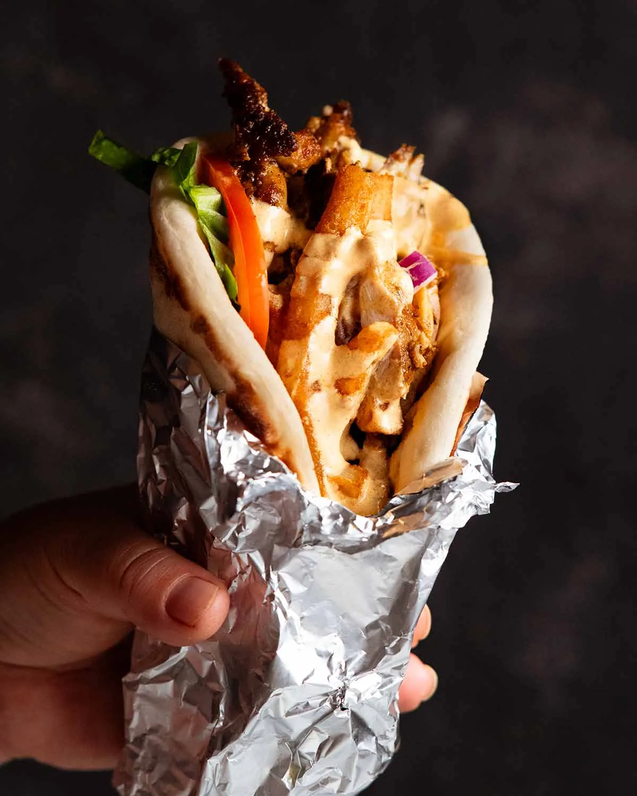

Kalimera's Famous Chicken Gyros
It's ridiculously, unbelievably, eye-rollingly good.

Ingredients
- 1.25 kg / 2.5 lb chicken thighs, skinless boneless - butterfly thicker parts to make the thickness more uniform if they're large (Note 1)
Kalimera's chicken gyros marinade
- 1 tbsp sweet paprika (ie regular paprika, not smoked not spicy)
- 1 tbsp mustard powder (substitute with Dijon mustard)
- 1 tbsp dried oregano (Greek, if you've got it)
- 1/2 tbsp curry powder , mild not spicy *secret ingredient!* (Note 2)
- 1 1/2 tsp cooking salt / kosher salt (halve if using table salt, +50% if using flakes)
- 1/2 tsp black pepper
- 1/3 cup extra virgin olive oil
Hot Chips
- 400g / 14oz thick-cut chips , frozen - optional (Note 3)
- Pinch table salt , for the chips (or chicken salt)
Kalimera gyros sauce:
- 1 cup plain yoghurt , preferably Greek or Greek-style
- 3 tbsp whole-egg mayonnaise , substitute regular mayonnaise
- 3 tbsp extra virgin olive oil
- 2 tbsp yellow American mustard (yes, really!) - substitute with Dijon mustard, not hot English mustard, too spicy
- 2 tsp garlic powder
- 2 tsp sweet paprika
- 1/2 tsp cooking salt / kosher salt
To serve
- 2 tomatoes , halved and sliced
- 3 cups cos lettuce (romaine) , finely sliced (5mm / 0.2")
- 1/2 small red onion , diced (5mm / 0.2" squares)
- 5 x 20cm / 8" pita breads, the slightly bready kind if you can (Note 5)
Instructions
ABBREVIATED RECIPE
- Marinate chicken overnight (minimum 3 hours). Mix sauce, make chips. Cook chicken, rest 3 minutes, assemble gyros as follows: Sauce, chicken, lettuce, tomato, onion, chips, sauce. Fold, devour!
FULL RECIPE
- Marinate chicken - Mix the marinade ingredients in a large bowl. Add the chicken and mix well to coat. Marinate in the fridge for 24 hours (absolute minimum 3 hours!)
Before cooking:
- Sauce first - Mix the ingredients in a bowl and set aside for at least 20 minutes to let the flavours meld.
- Chips next - If using hot chips, make them before cooking the chicken using whatever method suits - baked, fry, air fry. (I bake for convenience and fry to impress.) Season with salt to taste (sorry, you're going to have to eat one!) Keep them warm in a 100°C/200°F oven while you cook the chicken.
Cooking the chicken gyros
- BBQ option (recommended!) - Preheat the BBQ on medium high (the grill side preferred, flat iron also works). No need to oil the grills. Cook the chicken for 3 - 4 minutes on each side until deep golden with slightly charred edges.
- Stove cook - Heat a large non stick pan over medium high heat (no oil required). Cook the chicken in batches for 3 - 4 minutes on each side until deep golden and cooked through (internal temperature 72°C/162°F). Give the pan a quick wipe with paper towels between batches, to remove excess black bits.
- Remove & rest - Remove chicken onto a tray. Loosely cover with foil and rest for 3 minutes, then slice into 1 cm / 0.4" pieces.
Assemble gyros
- Heat the pita bread until warm and pliable. Honestly, microwave is so easy (stack on plate, 45 sec - 1 1/2 minutes on high). For stove, brush each side with water then heat in lightly oiled non-stick pan for 1 minute on each side (medium high), don't let it go crispy else it will crack when folded.
- Wrapping - Spread 3 tablespoons of the sauce down the middle. Pile the chicken onto the sauce, add lettuce and tomato on one side. Sprinkle with red onion, pile chips on top, drizzle with more sauce. Fold to enclose, wrap in foil to keep everything in place.
- Serve gyros with extra sauce for dunking!